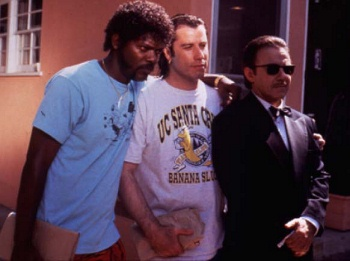
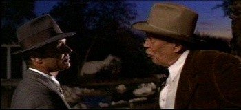
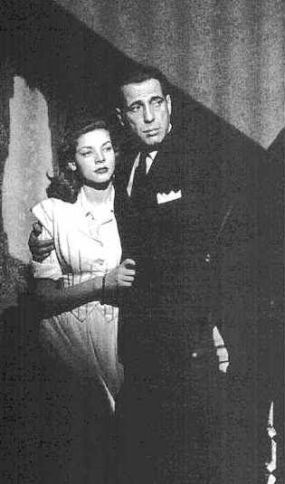
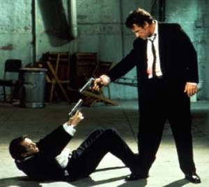

Favorite Dramas
|
    |
Get Shorty I once asked this literary agent what writing paid the best, and he said, "ransom notes." Hoffa (1992) "Me? Give up Jimmy Hoffa?" Chinatown (1974) "RRRRIIIIPPPP" (Jack in the Land Records) Cuckoo's Nest (1975) "I'm here to cooperate with you one hundred percent. Hundred percent. You watch." The Caine Mutiny (1954) "Strawberries" Billy Budd (1962) "Farewell, oh Rights of Man" The Big Sleep (1946) "My, my, my. Such a lot of guns around town and so few brains!" Cool Hand Luke (1967) "I can eat 50 eggs" The Player (1992) "Suspense, laughter, violence. Hope, heart, nudity, sex. Happy endings. Mainly happy endings." The Maltese Falcon (1941) "The stuff dreams are made of." The Right Stuff (1983) "Hey...y'all wanna drink a whiskey?" Cisco Pike (1972) "He's a walking contradiction, partly truth and partly fiction" Miller's Crossing (1990) "Look in your heart" Heartland (1981) The Long Good Friday (1980) "You need a million dollar computer to understand this." The Quiet Man (1952) "The proprieties must be observed" Richard III (1956) "Now is the winter of our discontent Made bright summer..." Pulp Fiction (1994) "Oh, I'm sorry. Did I break your concentration?" Sometimes a Great Notion (1971) "Never give a inch" Medicine Man (1992) "But...you're a girl!" GoodFellas (1990) "Hey, what do you like, the leg or the wing?" Prizzi's Honor (1985) "What kind of a person wouldn't catch a baby." Reservoir Dogs (1994) "You shoot me in a dream, you'd better wake up and apologize." Duel (1971) (TV) Walkabout (1971) And you thought you saw all of Jenny's Movies. To Die For (1995) "It's nice to live in a country where life, liberty ...and all the rest, stand for something." |